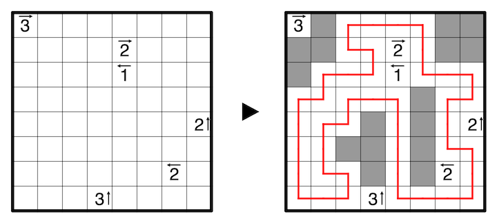

Every unvisited cell besides those that contain clues must form pentominos - areas of exactly five orthogonally connected empty cells. No pentomino shape may repeat, including rotations and reflections, and they must not touch each other, not even diagonally. Not all of the 12 possible pentomino shapes must be used.
A clue specifies the number of cells belonging to pentominos in the indicated direction.
An example with tetrominos is provided:
